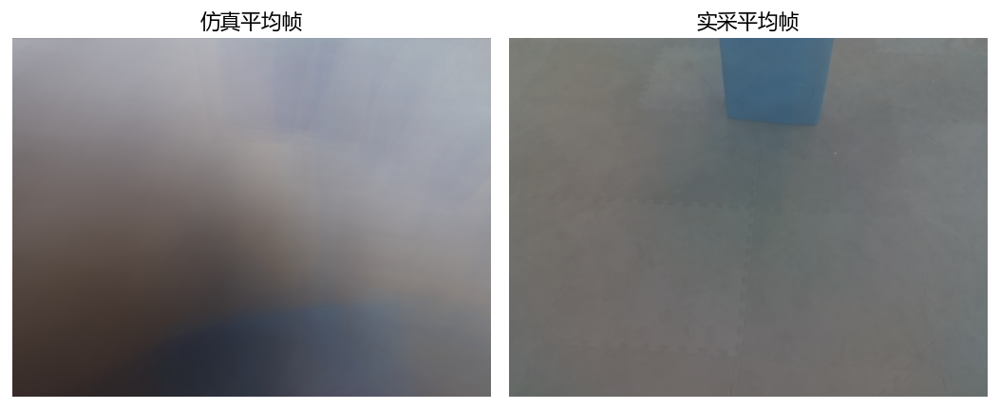
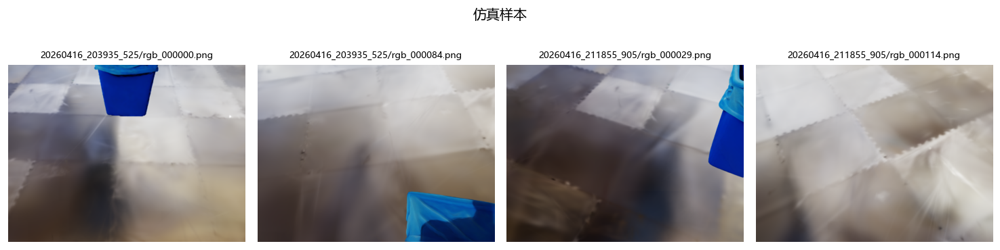
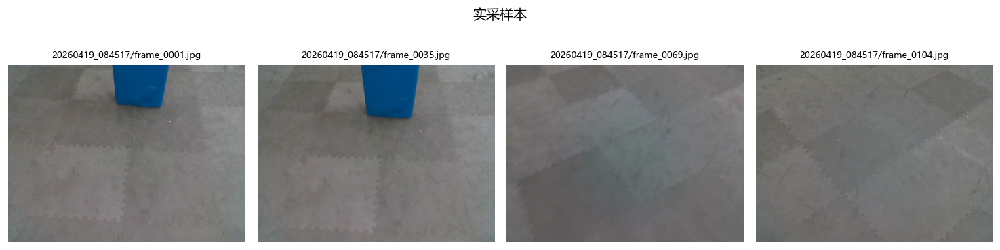
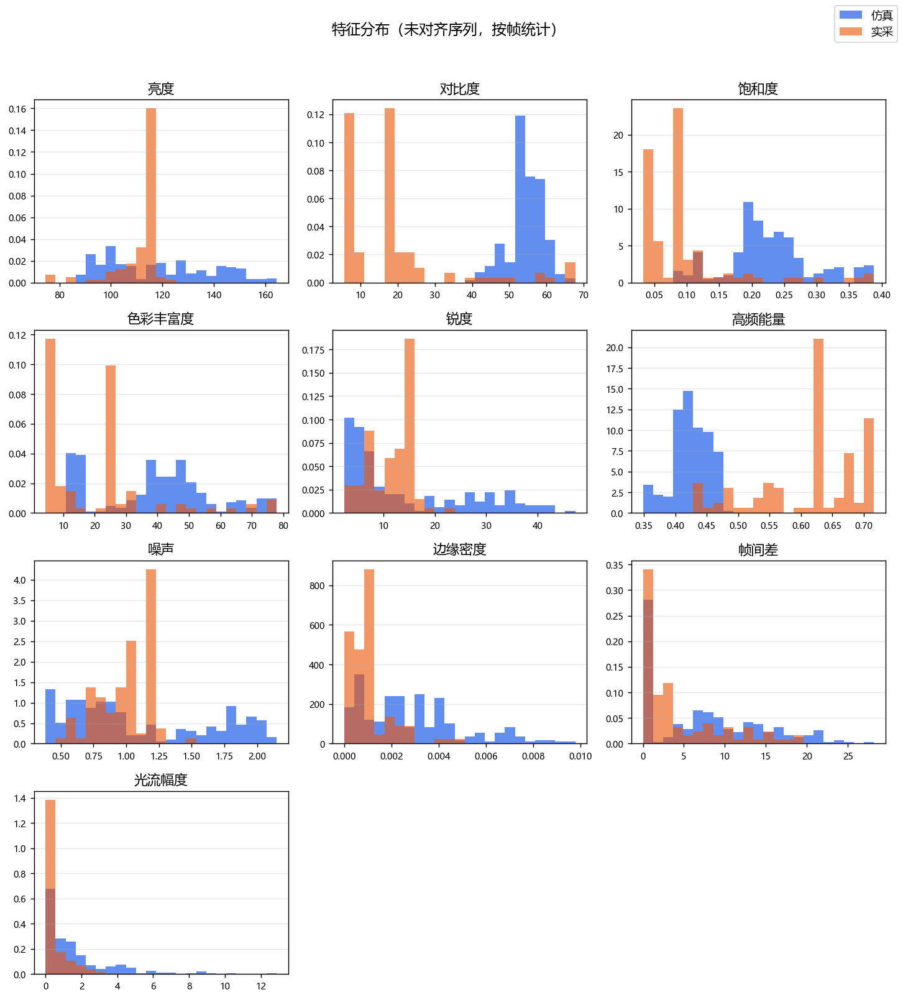
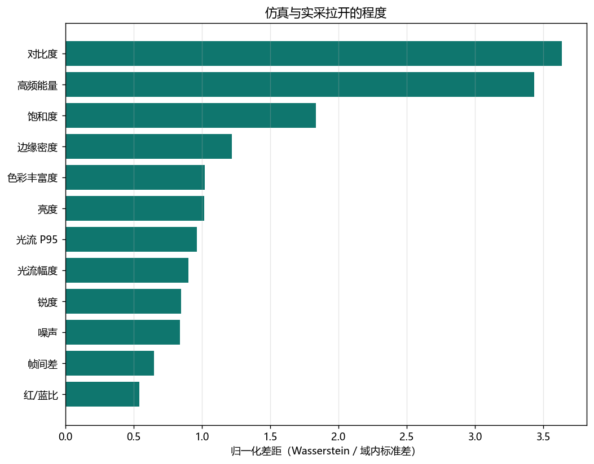
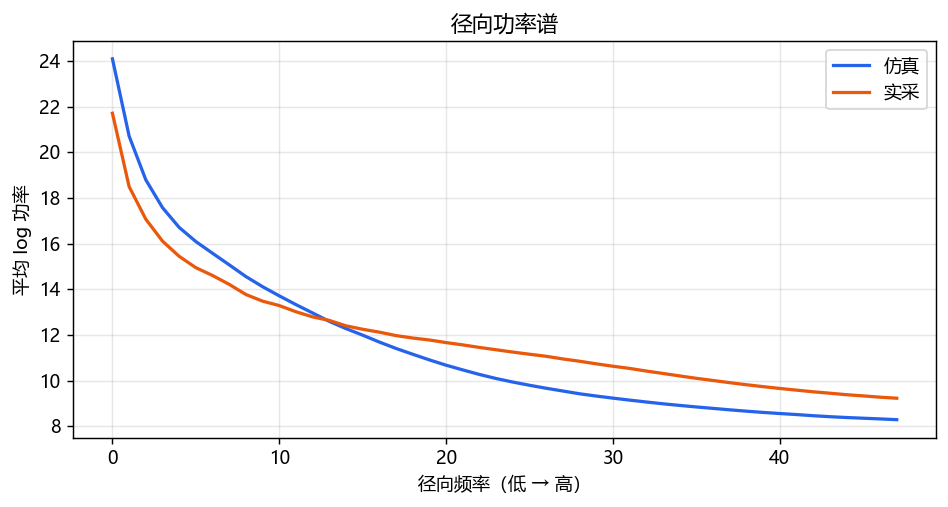
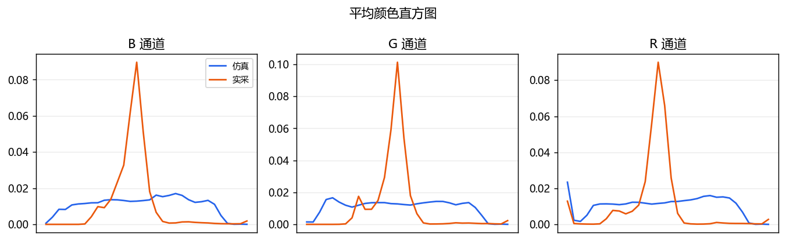

两条序列没有逐帧对齐。下表比较的是各自帧集合上的分布，而不是同一时刻的像素误差。







| 特征 | 仿真均值 | 实采均值 | Wasserstein | 归一化差距 | 方向 |
|---|---|---|---|---|---|
| 亮度 | 118.0 | 110.8 | 14.7 | 1.02 | 仿真更高 |
| 对比度 | 54.5 | 18.7 | 36.1 | 3.64 | 仿真更高 |
| 饱和度 | 0.226 | 0.0981 | 0.128 | 1.84 | 仿真更高 |
| 色彩丰富度 | 39 | 20.8 | 18.3 | 1.02 | 仿真更高 |
| 红/蓝比 | 0.983 | 0.976 | 0.0467 | 0.542 | 仿真更高 |
| 锐度 | 14.4 | 11.8 | 6.93 | 0.847 | 仿真更高 |
| 高频能量 | 0.425 | 0.613 | 0.189 | 3.43 | 实采更高 |
| 噪声 | 1.09 | 0.997 | 0.311 | 0.839 | 仿真更高 |
| 边缘密度 | 0.00284 | 0.00101 | 0.00185 | 1.22 | 仿真更高 |
| 帧间差 | 7.47 | 4.49 | 3.83 | 0.649 | 仿真更高 |
| 光流幅度 | 1.61 | 0.429 | 1.23 | 0.902 | 仿真更高 |
| 光流 P95 | 10.6 | 2.07 | 8.7 | 0.962 | 仿真更高 |